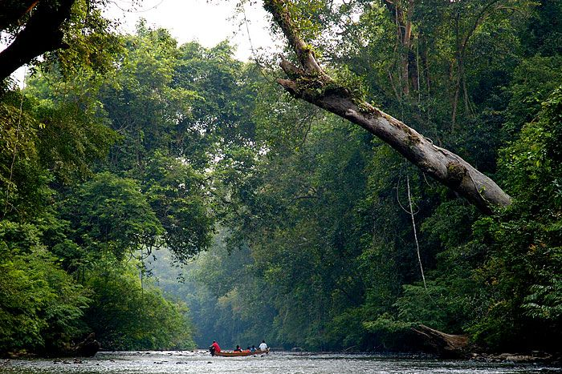
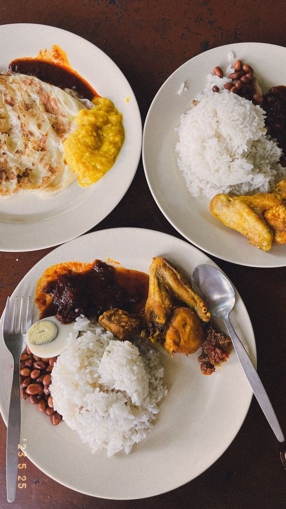
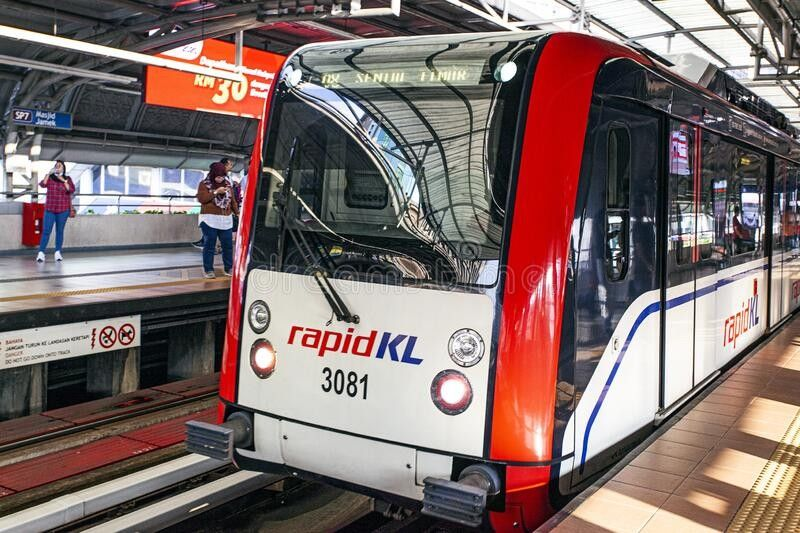

Discover Malaysia: A Land of Culture, Nature, and Modern Wonders
Malaysia is a Southeast Asian country known for its cultural diversity,
modern cities, tropical rainforests, and rich culinary heritage.
From the towering skyscrapers of Kuala Lumpur to the peaceful villages
and islands, Malaysia offers travelers a balanced mix of tradition and
modernity.
The country is home to Malays, Chinese, Indians, and indigenous communities,
each contributing to Malaysia’s unique identity. This diversity can be seen
in daily life, architecture, festivals, and food culture throughout the nation.
Culture and Traditions
Malaysian culture is deeply rooted in respect, harmony, and multiculturalism.
Traditional clothing such as the Baju Melayu and Baju Kurung are still worn
during festivals and formal occasions. Major celebrations include Hari Raya Aidilfitri,
Chinese New Year, and Deepavali.
Religion also plays an important role in Malaysian society. Islam is the official
religion, but freedom of worship allows Buddhism, Hinduism, and Christianity to
coexist peacefully.
Places to Visit

Malaysia offers a wide range of attractions for all types of travelers.
Popular destinations include the Petronas Twin Towers in Kuala Lumpur,
the historic city of Melaka, and the cool highlands of Cameron Highlands.
Nature lovers can explore national parks such as Taman Negara,
relax on the beaches of Langkawi, or go island hopping in Sabah and Sarawak.
Famous Places to Eat and Dine

Malaysian cuisine is one of the country’s biggest attractions.
Signature dishes such as Nasi Lemak, Char Kway Teow, and Roti Canai
reflect the multicultural background of the nation.
Street food can be found easily in night markets and hawker centers,
while fine dining restaurants are available in major cities offering
both local and international cuisine.
Transportation

Transportation in Malaysia is modern and affordable. Major cities are
connected by highways, rail services, and domestic flights.
Kuala Lumpur has an efficient public transport system including
MRT, LRT, and monorail services.
Ride-hailing services such as Grab are widely used and convenient
for both locals and tourists.
Travel Tips
Travelers are advised to dress modestly when visiting religious places.
The climate is hot and humid throughout the year, so light clothing
and hydration are important.
Respect local customs
Dress modestly
Plan travel carefully
Use local guides
Carry identification
Famous Songs in Malaysia
Music plays an important role in Malaysian culture, reflecting its rich
multicultural identity. Here are some iconic Malaysian songs loved by locals
and visitors alike.
THE BEST OF GLOBETREK DELIVERED TO YOUR INBOX
Sign up for inspiring travel stories, guides, and cultural insights.